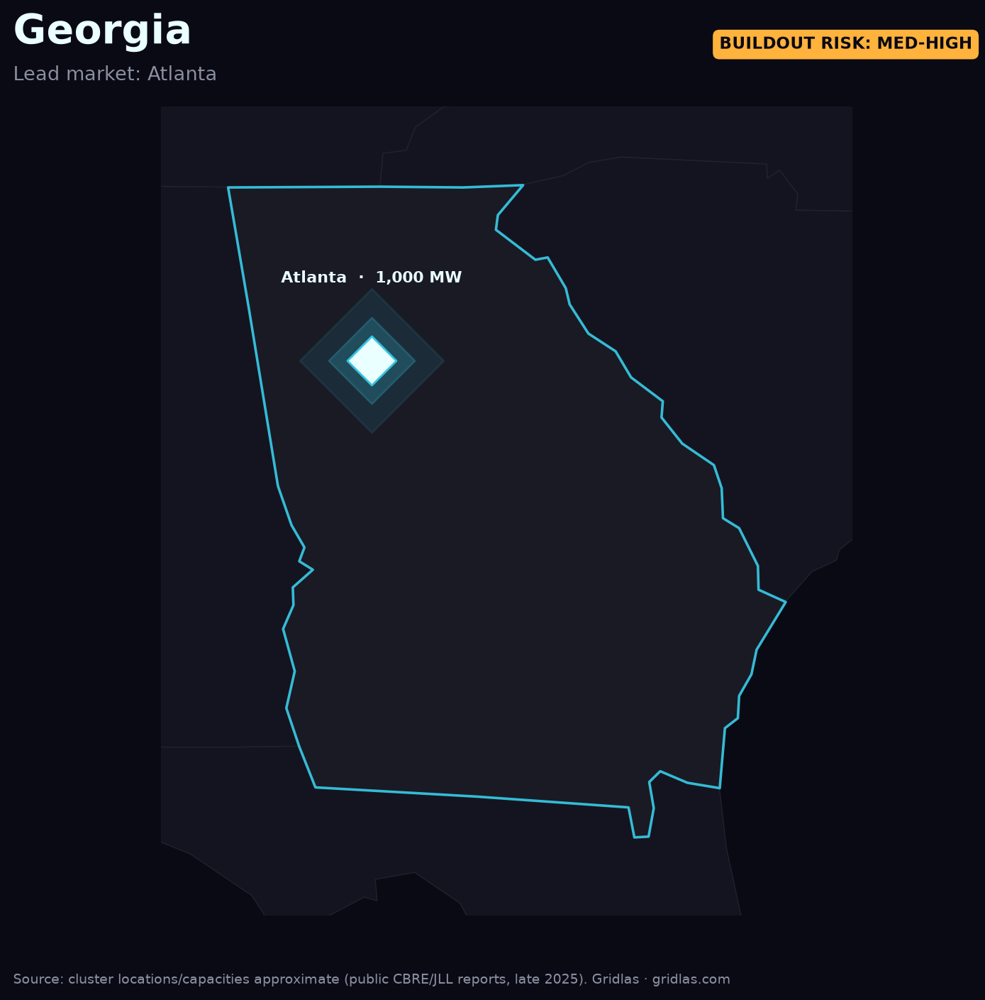

Home / Data centers by region / Atlanta, Georgia
The fastest-rising major market in the country — and a utility load forecast that data centers rewrote almost overnight.
Metro Atlanta has crossed 1 GW of operating supply and has roughly 2,076 MW under construction — one of the largest construction pipelines of any U.S. market. Growth corridors run through Douglas County, Fulton, and Newton County, where multi-hundred-megawatt campuses are now routine.

That surge reshaped Georgia Power's planning: the utility's load forecasts were revised sharply upward, with data centers the dominant driver. The state's nuclear base (Vogtle's new units) helps, but the same interconnection-timing problem applies — firm capacity has to show up on schedule.
Georgia is the template for how a Southeast grid with cheap power and aggressive incentives absorbs a demand shock. Its construction pipeline is a leading signal for where operating capacity — and the next round of grid strain — lands in 2026–27.
Get the rankings + maps. The Gridlas report covers Atlanta and four other regions in depth, with high-res maps and the underlying dataset — from public EIA, LBNL & ERCOT data.
Get the report →